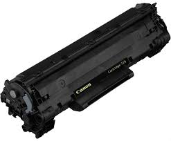
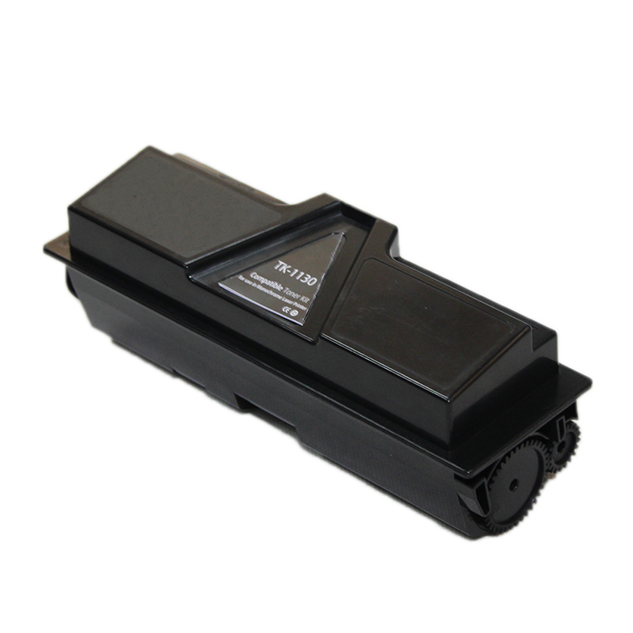
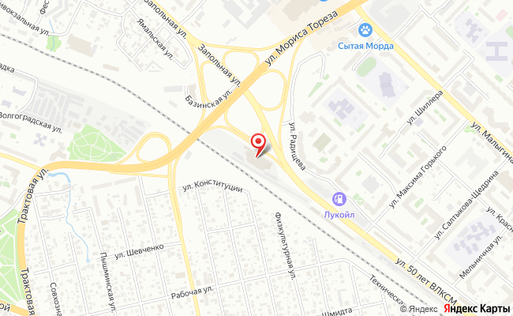

Заправка картриджей для принтеров в Тюмени
Сервисный центр предлагает услугу по заправке картриджей в Тюмени. К обслуживанию принимаются картриджи для лазерных и струйных принтеров производителей HP, Canon, Brother, Kyocera, RICOH, Pantum и других. Заправка картриджей для принтера включает диагностику, полную разборку, засыпку тонера, замену изношенных деталей и обязательный тест печати перед выдачей. Стоимость услуги начинается от 450 ₽, срок выполнения в большинстве случаев занимает один рабочий день. Обслуживание доступно как для организаций по договору, так и для частных клиентов.

Заправка в цифрах
Новый блок: фактыРассчитать стоимость заправки
Новый блок: расчётУкажите модель принтера или картриджа и количество, ответим с ценой и датой готовности. Организациям оформим договор и закрывающие документы.
- Ответ в рабочее время в течение часа
- Тест-лист и гарантия качества печати
- Telegram, WhatsApp, MAX или 8 800 200 62 32
Какие картриджи принимаются на заправку
Блок: текст + фото-галерея



Сервисный центр работает с расходными материалами для лазерных и струйных принтеров.
Заправка картриджей для лазерных принтеров составляет основной объем работ. Тонер для принтера подбирается под конкретную модель: марка порошка влияет на плотность печати, сыпучесть и ресурс фотобарабана. Заправка картриджей для лазерного принтера выполняется с заменой чипа, если модель ведет учет отпечатанных страниц.
Некоторые картриджи для струйных принтеров имеют ограниченный ресурс и не рассчитаны на многократную заправку: печатающая головка встроена в картридж и вырабатывает собственный срок службы. Результат диагностики показывает, целесообразна ли заправка или нужно приобрести новый картридж.
На сайте есть отдельные разделы с ценами и условиями по следующим брендам принтеров:
В числе востребованных услуг заправка картриджей для техники Pantum. Заправка картриджа Pantum PC-211 и совместимых моделей PC-211EV и PC-230 наиболее востребована в офисах Тюмени. Заправка картриджа PC-211 требует обязательной замены чипа, иначе принтер продолжит показывать нулевой ресурс. Также выполняется обслуживание картриджей Pantum для моделей M6500, M6550 и P2200.
- Brother: лазерные картриджи серии TN, сброс счетчика тонера.
- Canon: модели 725 и 737, серия FX.
- HP: серии CF и CE, картриджи 305 и 106A.
- Kyocera: картриджи серии TK для офисных МФУ.
- RICOH: картриджи серии SP.
Бренды и цена «от»
Новый блок: бренды с ценой Pantum
PantumЭтапы диагностики и заправки картриджа
Блок: нумерованные этапыРаботы выполняются по регламенту и включают шесть этапов:
Если диагностика показывает необходимость ремонта, его объем и стоимость согласовываются до начала работ. Ремонт и заправка картриджей для принтера выполняются в одном сервисном центре, поэтому дополнительная транспортировка не требуется.
- Прием и диагностика. Проверяем состояние корпуса, фотовала, ракеля и магнитного вала, снимаем тест печати до начала работ
- Разборка. Полностью разбираем картридж, бункер отработки очищаем от остатков тонера
- Очистка узлов. Выполняем продувку, чистку дозирующего лезвия и контактных групп
- Засыпка тонера. Используем порошок, подобранный под конкретную модель, норма засыпки контролируется по весу
- Замена расходных деталей и чипа. При выявлении износа выполняем замену фотобарабана, ракеля и магнитного вала, а при наличии счетчика чип обнуляем или заменяем на новый
- Сборка и тест печати. Каждый картридж проходит контрольную печать, лист прикладываем при выдаче
Сколько стоит заправка картриджа
Блок: таблица характеристикЦена зависит от бренда, ресурса картриджа и необходимости замены деталей и чипа. Базовые тарифы сервисного центра:
| Картриджи HP | от 450 ₽ |
| Картриджи Canon | от 450 ₽ |
| Картриджи Brother | от 450 ₽ |
| Картриджи RICOH | от 450 ₽ |
| Картриджи Kyocera | от 850 ₽ |
| Картриджи Pantum, Xerox, Samsung и других брендов | рассчитывается по модели |
| Замена чипа | рассчитывается по модели |
| Ремонт оргтехники и компьютерной техники | от 1 000 ₽ |
Для организаций
Новый блок: лид для юрлицПартия от 10 картриджей по графику
Дата готовности согласуется заранее, чтобы офисная техника не простаивала. Договор, счёт, акт и полный пакет закрывающих документов. Бюджетным учреждениям: подстатья 225 КОСГУ.
Согласовать графикСроки и гарантия
Блок: гарантияСтандартный срок выполнения работ составляет один рабочий день. При передаче на обслуживание партии от 10 картриджей дата готовности определяется по предварительному согласованию с заказчиком для обеспечения непрерывной работы офисной техники.
На каждую заправку предоставляется гарантия качества печати. Если картридж печатает с дефектом по вине сервисного центра, повторная заправка или устранение дефекта выполняются без дополнительной оплаты. Гарантия не распространяется на механические повреждения картриджа, полученные после выдачи, и на естественный износ фотобарабана, который был выявлен при проведении диагностики.
Заправка или новый картридж
Блок: текстПо стоимости работ заправить картридж будет выгоднее, чем купить новый расходный материал: стоимость заправки начинается от 450 ₽, а новый оригинальный картридж будет стоить от 3 000 ₽. Для офиса, расходующего два или три картриджа в месяц, разница за год превращается в существенную экономию.
Заправка целесообразна в следующих случаях:
Замена на новый картридж оправдана при износе корпуса, повреждении вала, а также для струйных картриджей со встроенной печатающей головкой. Результат диагностики показывает, какой вариант будет целесообразен.
- корпус картриджа целый, без трещин и подтеков тонера
- фотобарабан и ракель не выработали ресурс либо подлежат замене
- модель допускает замену или обнуление чипа
Где заправить картридж в Тюмени
Блок: фото-галерея + тегиОбслуживание проводится только в сервисном центре, выездная диагностика не предоставляется.
Контактные данные:
Режим работы:
Работы выполняются по договору с полным пакетом закрывающих документов. Для предварительного расчета достаточно оставить заявку на сайте или по телефону, при обращении потребуется указать модель оборудования.
Как добраться и как оплатить
Новый блок: карта и NAP
Открыть в Яндекс Картах: маршрут до ул. 50 лет ВЛКСМ, 16Что пишут клиенты сервисного центра
Новый блок: отзывы и рейтингиОтзыв: партия картриджей для офиса, срок, качество печати, документы.
Отзыв: Brother, сброс счётчика, всё заработало.
Отзыв: Kyocera TK, замена ракеля по диагностике, предупредили заранее.
Для запуска собрать отзывы с Яндекс Карт и 2ГИС, тексты в прототипе условные.